514巷介紹
輔大側門的514巷有很多好吃的餐廳
但是由於店家有點多，所以可能沒有很全面
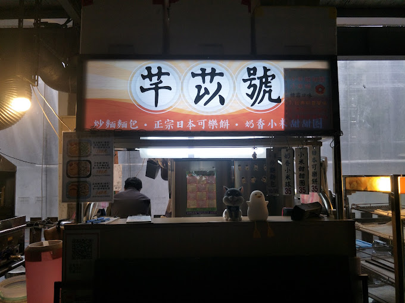
芊苡號 日式炒麵便當
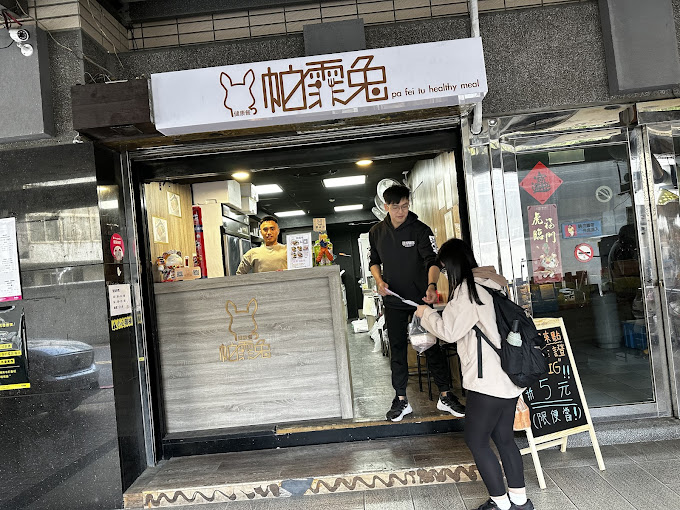
帕霏兔
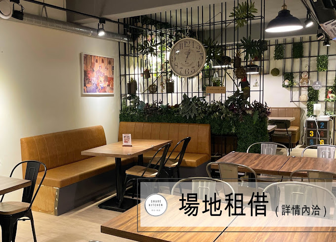
想初。享廚 Share Kitchen
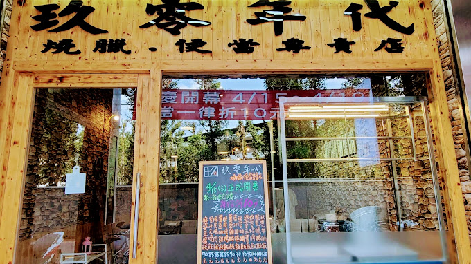
玖零年代 燒臘便當專賣店
芊苡號 日式炒麵便當是一個主打炒麵的店家，
而且老闆還會給你免費加大炒麵，
可以解決吃不飽的問題，
吃完後還有甜點可以買。
這是適合減肥或健身的健康餐，大部分是原型食物，沒有過多調味，美味又健康。
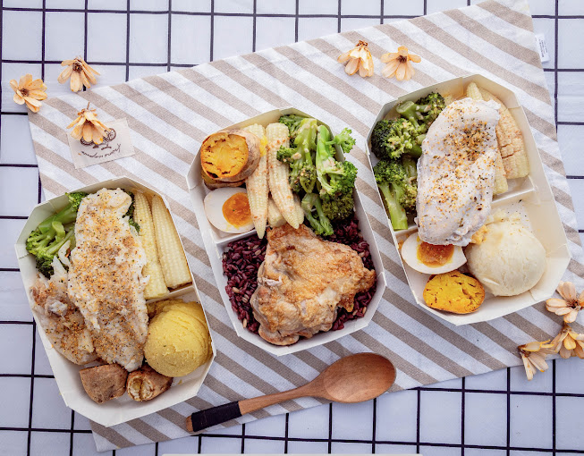
這是一個港式燒臘店，如果有興趣可以參考看看
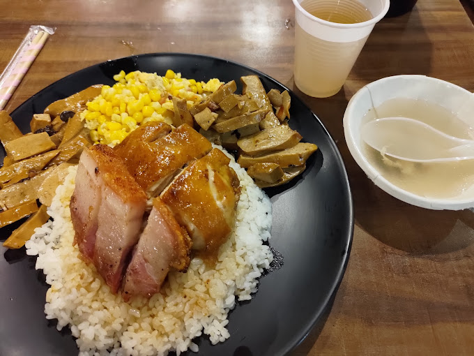
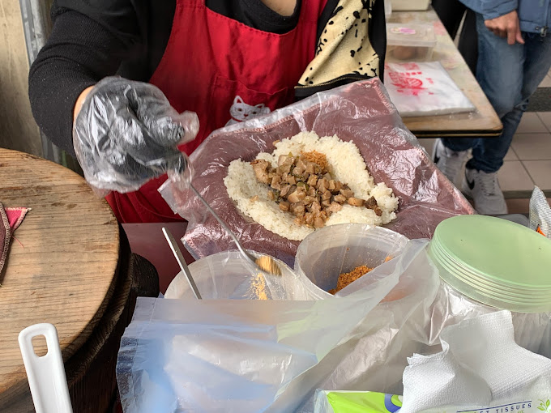
輔大飯糰
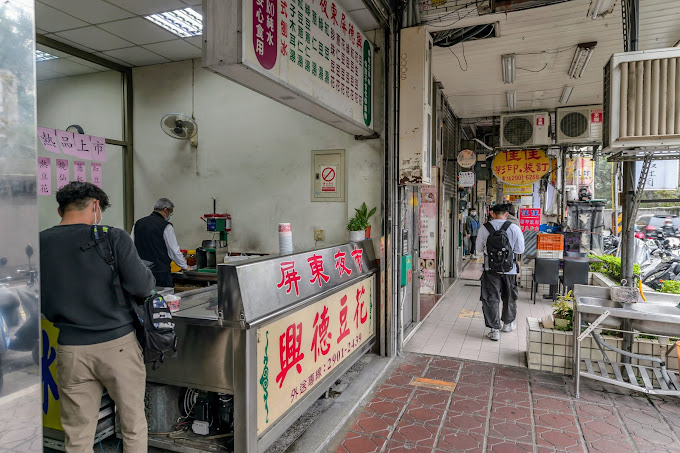
輔大興德屏東夜市豆花
Mr.布魯-水煮健康餐
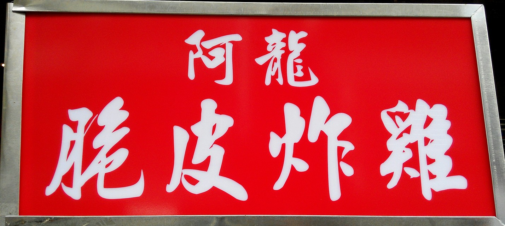
阿龍脆皮炸雞
如果早上想吃飽一點，又想要有熱熱的食物握在手上，飯糰就是好選擇
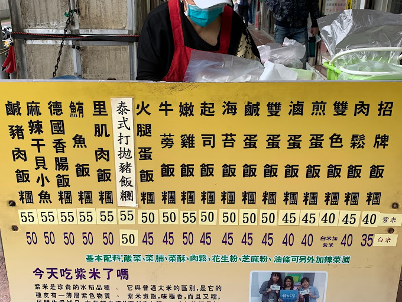在夏天的時候非常適合吃一碗冰冰涼涼的豆花。
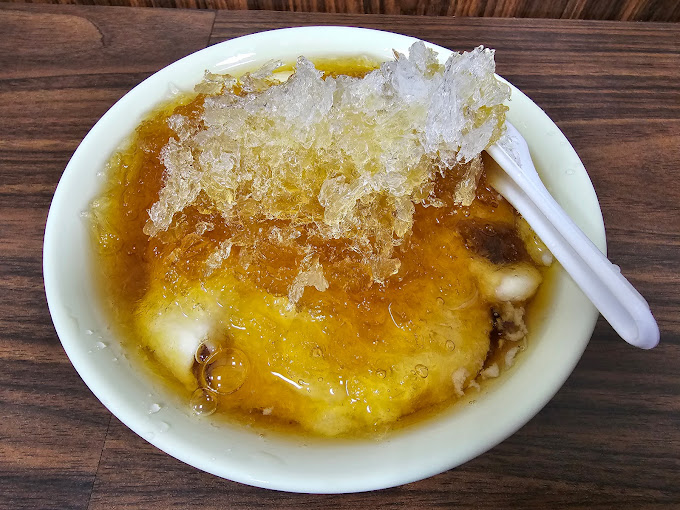這也是一個適合減肥或健身的健康餐，大部分是原型食物，沒有過多調味，美味又健康。
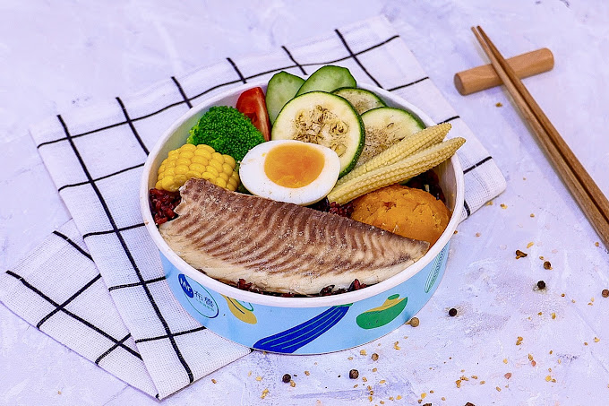這是一家炸雞店，如果想吃脆脆的炸雞可以來這邊吃喔~
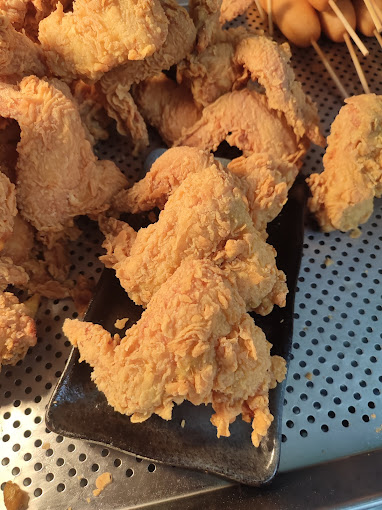
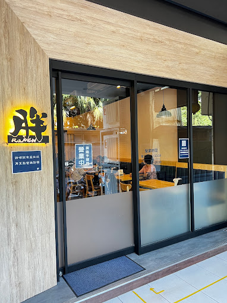
胖拉麵
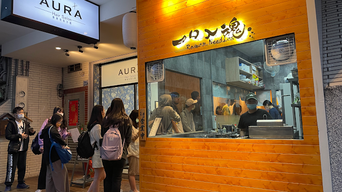
一口入魂雞白湯拉麵
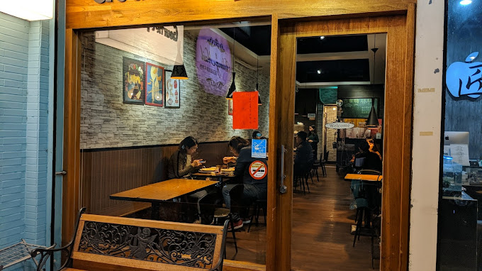
Gourmet Pasta
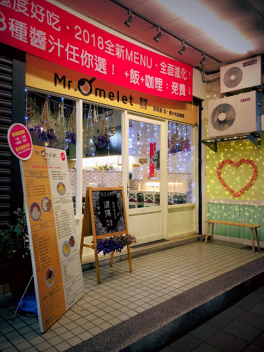
Mr.Omelet歐姆先生

這是一家拉麵店，如果突然想要吃熱熱的拉麵，這是一個很好的選擇。
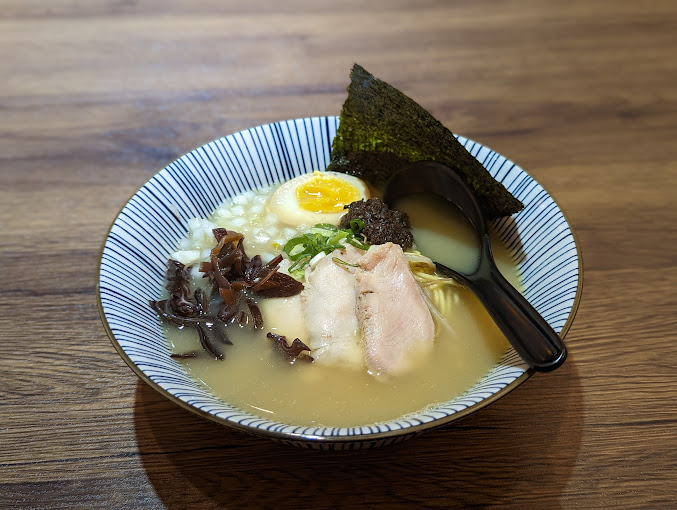這是一家義大利麵店，裡面還有免費的玉米濃湯，
如果想吃義大利麵的話，可以選擇這家店。
這是一家咖哩飯專賣店，如果想吃剛裡的話可以來這裡
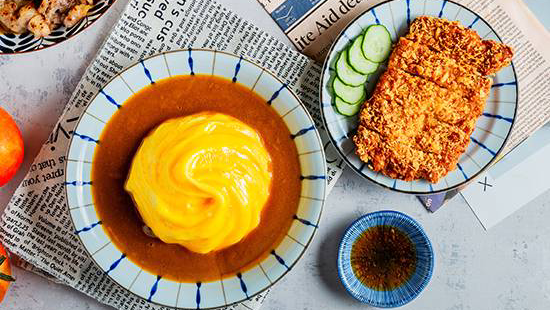
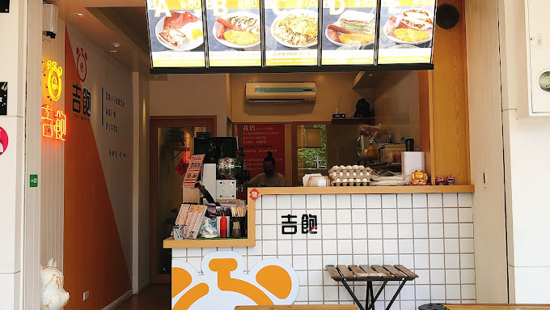
吉飽早餐-輔大店
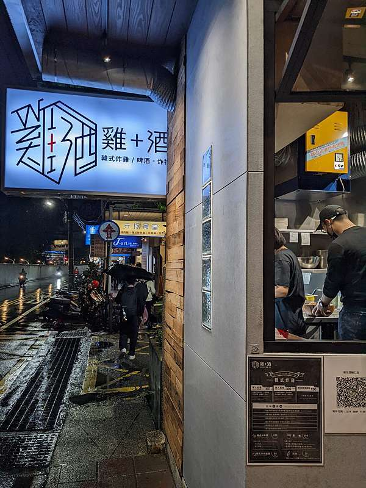
雞加酒 輔大店
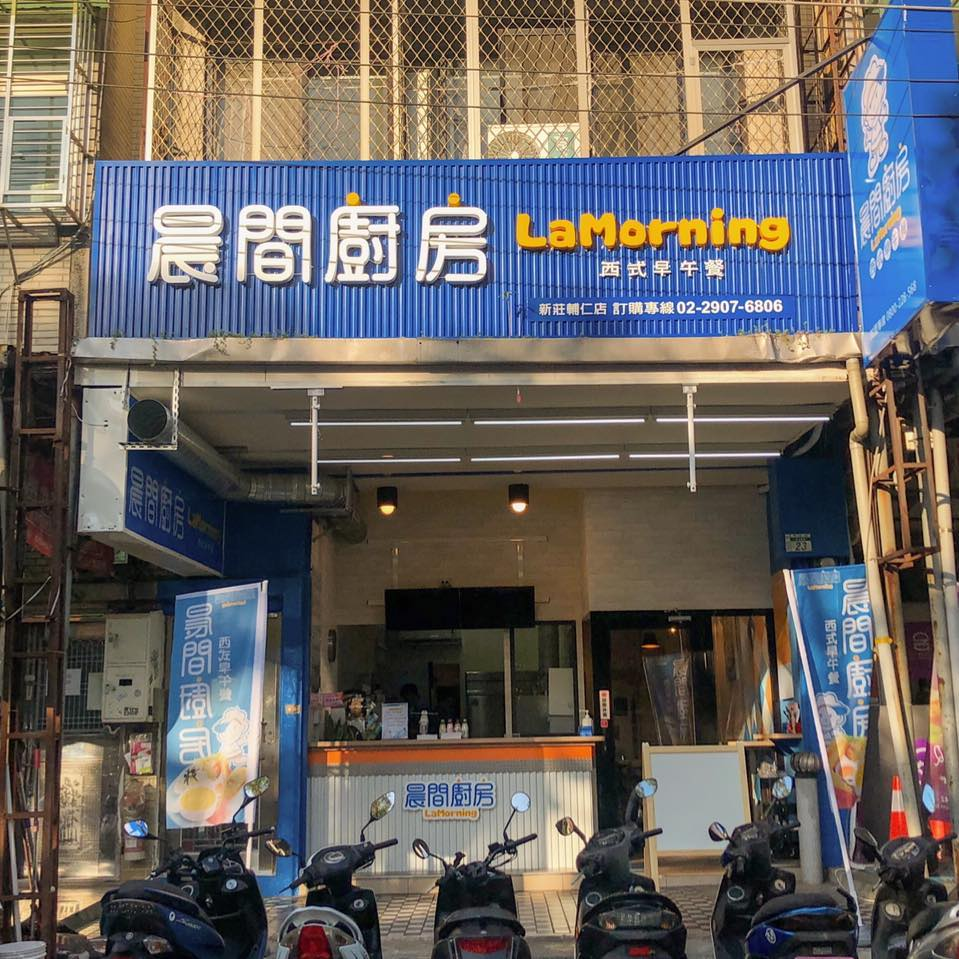
晨間廚房早午餐新莊輔仁店
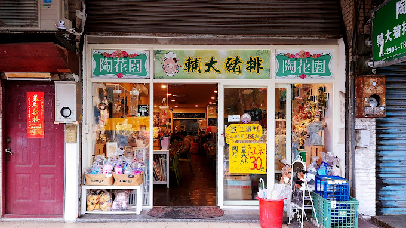
陶花園輔大豬排（輔大店）
這是一家早餐店，如果想要吃早餐的話這是一個好選擇。
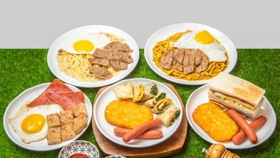這是一家早午餐店，如果想要吃早餐或午餐的話可以選擇這邊。
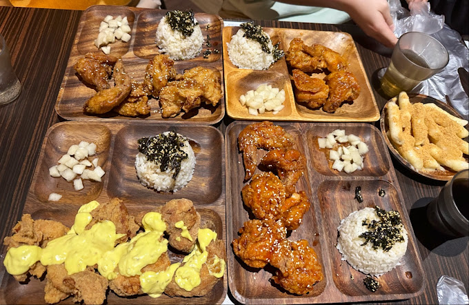這是一家早午餐店，如果想要吃早餐或午餐的話可以選擇這邊。
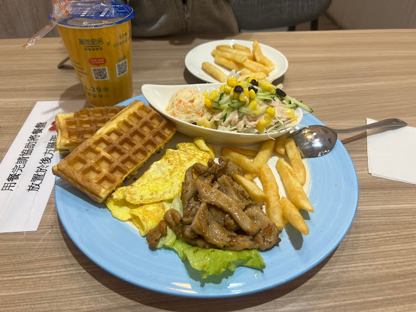這是一家豬排店，他的豬排比臉還大，沒吃過的一定要試試看
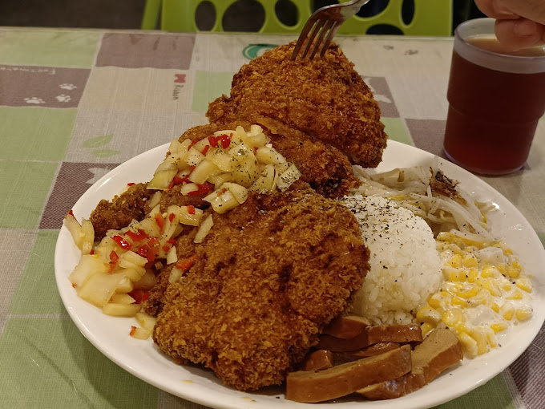